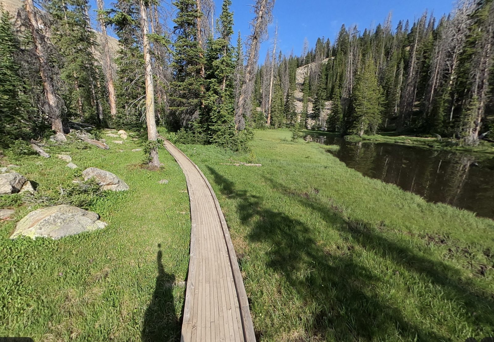

The Plan at a Glance
📍 Where
Echo Lake, High Uintas Wilderness, Utah. ~9,740 ft elevation, surrounded by conifers, fishable, paddle-board-able.
Trailhead: Fehr Lake TH, UT-150 (Mirror Lake Highway), MP 30.6.
📅 Two groups, two date windows
Teachers & Priests (full trip): Mon July 13 → Thu July 16
Deacons: Wed July 15 → Thu July 16
Teachers + Priests hike in Monday. Deacons driven in Wednesday by a separate set of leaders.
🚗 Meet & drop-off
Monday 09:00 at Tim's house.
Thursday: boys dropped off at their homes on the way back through the valley.
🥾 The hike
Boys hike ~1.5 mi on the Fehr Lake Trail to Hoover Lake. Jeep shuttles them the rest of the way (~3.25 mi by road) to camp. Light loads, no full packs.
Headline Timeline
Monday — Hike In
July 1309:00Meet at Tim's house, depart
10:30Gas station stop
11:30Hit the trailhead — start hiking
~14:00Jeep pickup at Hoover Lake, shuttle to camp (two Jeeps = one trip)
~16:00Camp set up at Echo Lake · dinner · campfire
Tuesday — Activities + Wilderness Survival Night
July 14AMBreakfast, paddle-boarding, fishing
PMArchery, BB guns, axe + knife throwing, swim
EveningBig dinner — boys build their own shelter ~100 ft from camp for the survival overnight
Wednesday — Deacons Arrive
July 15AMBreakfast at main camp
MiddayDeacons driven in via Murdock Basin Rd
PMPaddle boards, kayaks, inflatable boat, fishing, games
Thursday — Hike Out
July 16AMPack up at leisure · light breakfast
Mid-morningShuttle back to Hoover Lake · hike out to trailhead
PMDrive home · boys dropped at their houses on the way

What Parents Should Know
RSVP →
Sign up. Hoodie size, allergies, contact info. Submit by June 15.
Safety →
Survival-night protocol, bear/wildlife, firearms policy, medical lead, comms plan.
Sign Permission Form →
Parental / medical release. Required. Return by July 3.
Logistics →
Drop-off, vehicles, food plan, drive route.
Pack List →
What to bring, what NOT to bring, how to pack it.
Proposed Menu →
The meal plan — boys can vet and tweak.